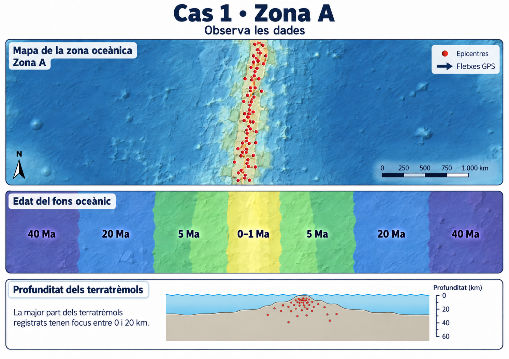
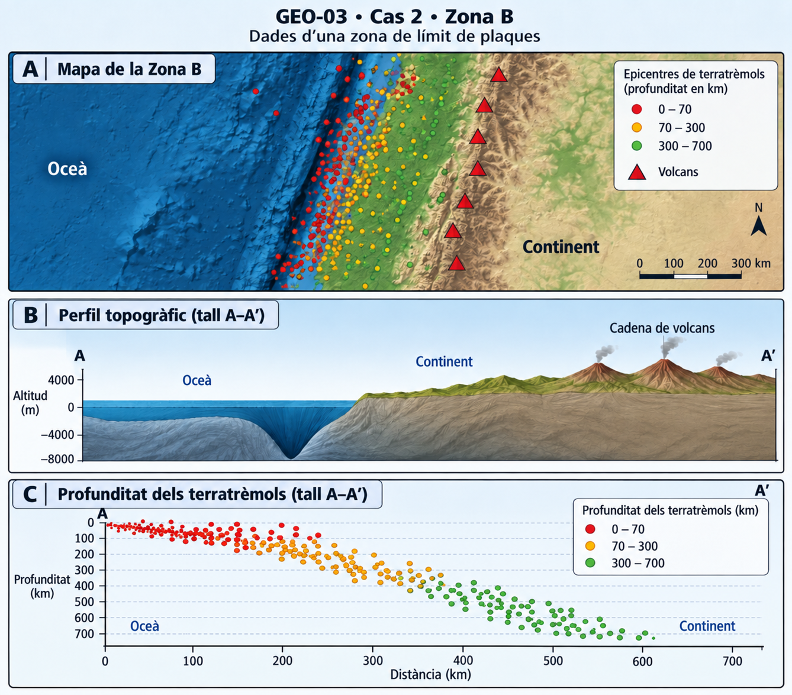
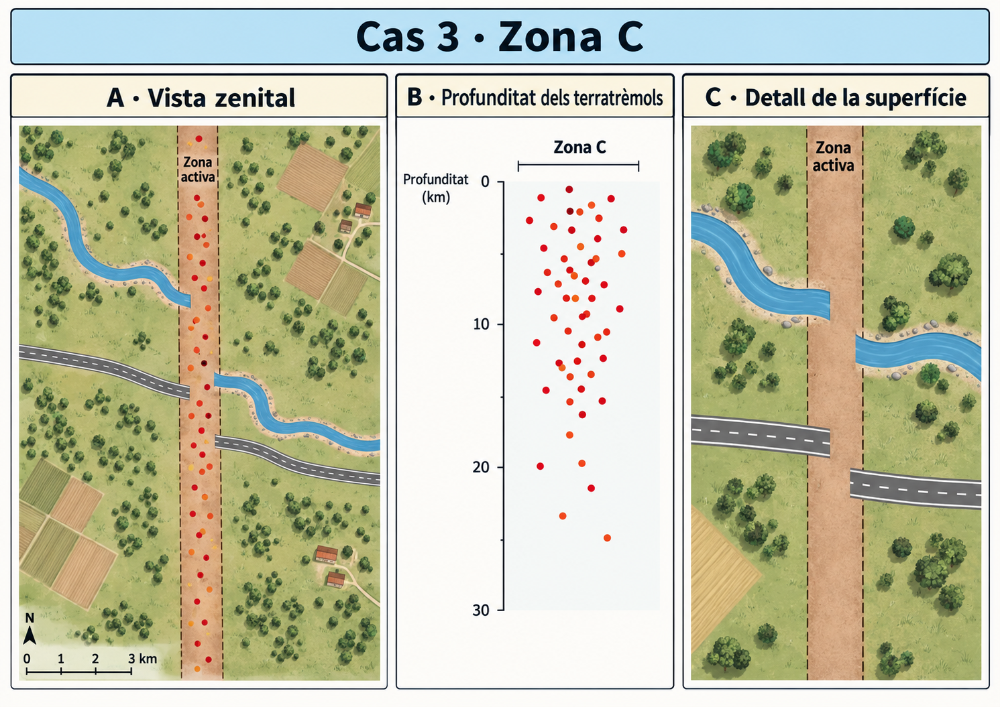
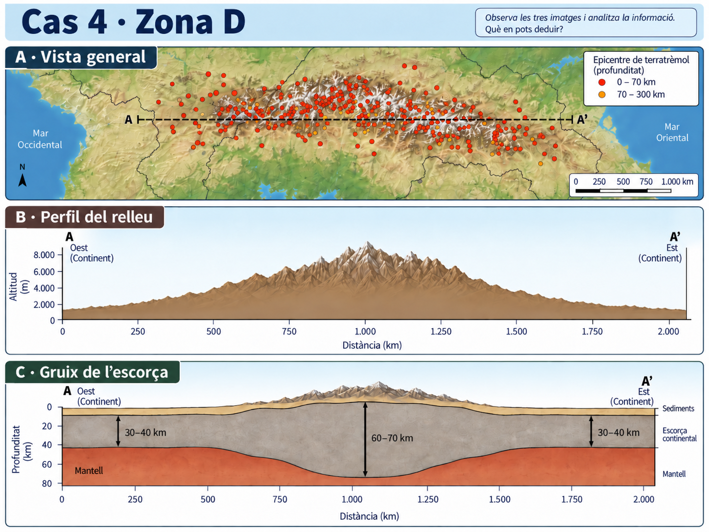

GEO-03 · Tectònica en dades¶
Durada: 2 sessions
Situació¶
A les sessions anteriors hem construït un model de la Terra a partir d'evidències i hem vist que la litosfera està fragmentada en plaques que es mouen.
Ara treballarem en sentit contrari: rebràs dades de diferents zones del planeta i hauràs d'utilitzar-les per identificar quin tipus de límit de plaques és compatible amb cada cas.
No basta escriure el nom del límit. Una interpretació geològica ha d'estar justificada amb evidències observables.
En cada cas seguiràs la mateixa rutina:
OBSERVA → IDENTIFICA → JUSTIFICA → INTERPRETA
Cas 1 · Zona A¶
Dades disponibles¶
Observa amb atenció la informació de la figura abans de respondre.

La figura combina tres tipus de dades sobre la mateixa zona oceànica:
- la distribució dels epicentres dels terratrèmols;
- l'edat del fons oceànic;
- la profunditat dels focus sísmics.
1. OBSERVA · Descriu les dades¶
Respon sense posar encara nom al tipus de límit.
1.1 · Sismicitat¶
a) Com es distribueixen els epicentres dels terratrèmols al mapa?
b) Segons el tall inferior, a quina profunditat es localitza la major part dels focus sísmics?
c) Diries que la sismicitat d'aquesta zona és principalment superficial o profunda? Justifica-ho amb una dada de la figura.
1.2 · Edat del fons oceànic¶
d) On es localitza el fons oceànic més jove?
e) Què passa amb l'edat de les roques a mesura que ens allunyam de la zona central?
f) Compara els dos costats de la zona central. Quin patró hi observes?
2. IDENTIFICA · Què està passant?¶
Utilitza conjuntament les dades de sismicitat i d'edat del fons oceànic.
a) Quin tipus de moviment entre dues plaques és més compatible amb aquest patró?
b) Quin tipus de límit de plaques proposes per a la Zona A?
c) Quina gran estructura del relleu oceànic esperaries trobar associada a aquesta zona?
3. JUSTIFICA · Defensa la teva interpretació¶
No basta escriure «és un límit divergent». Has d'explicar com ho saps.
Selecciona almenys tres evidències de la figura i relaciona-les amb la teva interpretació.
| Afirmació | Evidència observable | Què indica aquesta evidència? |
|---|---|---|
| Tipus de límit: | 1. | |
| 2. | ||
| 3. |
Conclusió argumentada¶
Redacta una conclusió de 3–5 línies. Ha de contenir:
- el tipus de límit que proposes;
- almenys dues dades concretes de la figura;
- una explicació de per què aquestes dades són compatibles amb la teva proposta.
4. INTERPRETA · Del patró al procés geològic¶
a) El patró d'edats indica que al centre de la Zona A es forma litosfera oceànica nova o que se'n destrueix? Justifica la resposta.
b) Explica per què el fons oceànic més antic es troba més lluny de la zona central.
c) Si aquest procés continuàs durant milions d'anys, què esperaries que passàs amb la distància entre els dos costats de la zona?
d) Quins dos fenòmens geològics de la figura associaries directament a l'activitat d'aquesta zona?
5. Revisa la teva resposta¶
Abans de continuar amb el cas següent, comprova:
- He descrit les dades abans d'interpretar-les?
- He identificat el tipus de límit a partir de més d'una evidència?
- He utilitzat correctament el patró d'edat del fons oceànic?
- He tingut en compte la profunditat dels terratrèmols?
- La meva conclusió explica per què les dades són compatibles amb el tipus de límit proposat?
Cas 2 · Zona B¶
Dades disponibles¶
Observa la figura abans d'intentar posar nom al procés tectònic.

La figura combina tres representacions de la mateixa zona:
- un mapa amb epicentres de terratrèmols i volcans;
- un perfil topogràfic entre l'oceà i el continent;
- un tall que mostra la profunditat dels terratrèmols al llarg de la zona.
En aquest cas hauràs de seleccionar tu quines dades són més útils per interpretar què està passant.
1. OBSERVA · Cerca patrons¶
1.1 · Selecciona les dades rellevants¶
Descriu tres patrons de la figura que consideris importants per interpretar la Zona B.
| Patró observat | Què mostra la figura? |
|---|---|
| 1 | |
| 2 | |
| 3 |
1.2 · Mira els terratrèmols en profunditat¶
a) Com varia, en general, la profunditat dels terratrèmols quan passam de l'oceà cap a l'interior del continent?
b) Quin patró geomètric formen aproximadament els focus sísmics en el tall A–A’?
c) On es concentren els terratrèmols més profunds: prop de l'oceà o més cap a l'interior del continent?
2. IDENTIFICA · Proposa una explicació tectònica¶
Utilitza conjuntament el relleu, el vulcanisme i la distribució dels terratrèmols.
a) Quin tipus de límit de plaques proposes per a la Zona B?
b) Quin procés concret creus que està tenint lloc entre les dues plaques?
c) Quina estructura del relleu submarí destaca al marge del continent?
3. JUSTIFICA · Defensa la teva interpretació¶
Construeix una justificació amb almenys tres evidències diferents. Una d'elles ha de fer referència obligatòriament a la profunditat dels terratrèmols.
| Afirmació | Evidència observable | Què indica aquesta evidència? |
|---|---|---|
| Tipus de límit i procés: | 1. | |
| 2. | ||
| 3. |
Conclusió argumentada¶
Redacta una conclusió de 4–6 línies que expliqui:
- quin tipus de límit proposes;
- quin procés tectònic hi té lloc;
- quines dades de la figura sostenen aquesta interpretació;
- per què el patró de profunditat dels terratrèmols és especialment important.
4. INTERPRETA · Explica el procés¶
a) Si els focus sísmics formen una franja inclinada que s'endinsa sota el continent, quina explicació geològica és compatible amb aquest patró?
b) Explica com pot relacionar-se aquest procés amb la presència simultània d'una depressió oceànica molt profunda, una cadena de volcans i terratrèmols de profunditats molt diferents.
c) En aquesta zona, la litosfera oceànica es crea, es conserva o s'introdueix cap a l'interior de la Terra? Justifica-ho.
5. TRANSFEREIX · Aplica el patró a una altra zona¶
Imagina una altra regió del planeta on es detecten aquestes dades:
- una depressió oceànica estreta i molt profunda prop d'un continent;
- una alineació de volcans terra endins;
- terratrèmols superficials prop de l'oceà i terratrèmols de més de 300 km de profunditat cap a l'interior.
Quina hipòtesi tectònica proposaries? Justifica-la utilitzant almenys dues de les dades anteriors.
6. Revisa la teva resposta¶
Abans de continuar amb el cas següent, comprova:
- He seleccionat patrons rellevants i no només he enumerat elements de la figura?
- He explicat com varia la profunditat dels terratrèmols?
- He relacionat almenys tres evidències amb la meva proposta?
- He diferenciat el tipus de límit del procés tectònic que hi té lloc?
- La meva conclusió explica les dades, en lloc de limitar-se a posar una etiqueta?
Cas 3 · Zona C¶
Dades disponibles¶
En aquest cas hi ha menys preguntes guia. Hauràs de decidir quines dades són realment útils per interpretar la zona.

La figura mostra:
- una vista zenital de la distribució dels epicentres;
- la profunditat dels focus sísmics;
- un detall de la superfície travessada per la zona activa.
1. OBSERVA · Selecciona les evidències¶
Identifica tres dades o patrons que consideris especialment rellevants.
| Evidència observable | Què et sembla que pot indicar? |
|---|---|
| 1 | |
| 2 | |
| 3 |
a) Com es distribueixen els epicentres respecte de la zona activa?
b) A quines profunditats es concentren els focus sísmics?
c) Observa el riu i la carretera a banda i banda de la zona activa. Què hi ha d'anòmal en la seva continuïtat?
2. IDENTIFICA · Proposa el tipus de límit¶
a) Quin tipus de límit de plaques proposes per a la Zona C?
b) Quin moviment relatiu entre els dos costats de la zona activa és compatible amb les dades?
3. JUSTIFICA · Defensa la teva interpretació¶
Redacta una conclusió de 5–7 línies. No tens una taula guia en aquest cas: selecciona i integra tu les evidències.
La resposta ha d'incloure:
- el tipus de límit que proposes;
- com es distribueixen els terratrèmols;
- quina profunditat presenten;
- què indica la discontinuïtat del riu i de la carretera;
- per què el conjunt de dades és compatible amb la teva interpretació.
4. INTERPRETA · Què implica aquest moviment?¶
a) En aquesta zona no observam un patró d'edats que indiqui formació de fons oceànic nou ni una franja de sismes que arribi a centenars de quilòmetres de profunditat. Què suggereix això sobre la creació o destrucció de litosfera en aquest límit?
b) Explica com un moviment principalment lateral pot arribar a produir terratrèmols.
5. TRANSFEREIX · Reconeix el patró¶
Imagina una altra zona continental on es registren aquestes dades:
- terratrèmols principalment superficials;
- epicentres alineats al llarg d'una franja estreta;
- un antic canal i una carretera apareixen desplaçats a banda i banda de la franja;
- no hi ha evidències de creació de fons oceànic ni d'una placa que s'endinsi profundament.
Quin tipus de límit proposaries i quines dues dades consideraries més decisives?
6. Revisa la teva resposta¶
Abans de continuar:
- He distingit el que observ del que inferesc?
- He utilitzat la profunditat dels terratrèmols com una dada i no com una etiqueta memoritzada?
- He interpretat el desplaçament del riu i de la carretera com una evidència de moviment relatiu?
- He justificat la meva proposta amb diverses dades independents?
- La meva explicació seria comprensible per una persona que no hagués vist la figura?
Cas 4 · Zona D¶
Dades disponibles¶
Aquest és el cas més obert. Ja no tens una seqüència de preguntes que et digui on mirar: hauràs de seleccionar i relacionar tu les evidències més útils.

La figura combina tres tipus d'informació sobre la mateixa zona continental:
- una vista general del relleu i de la distribució dels terratrèmols segons la seva profunditat;
- un perfil del relleu al llarg del tall A–A’;
- un perfil que mostra el gruix de l'escorça continental.
1. OBSERVA · Tria les dades decisives¶
Selecciona tres evidències de la figura que consideris especialment importants per explicar què passa a la Zona D.
| Evidència | Què observes? | Per què pot ser rellevant? |
|---|---|---|
| 1 | ||
| 2 | ||
| 3 |
2. IDENTIFICA · Formula una hipòtesi tectònica¶
a) Quin tipus de límit de plaques proposes per a la Zona D?
b) Quin procés tectònic concret podria explicar el conjunt de dades?
3. JUSTIFICA · Construeix l'explicació¶
Redacta una explicació de 6–8 línies que relacioni, com a mínim:
- el tipus de relleu que observam;
- la distribució i profunditat dels terratrèmols;
- el gruix de l'escorça sota la zona muntanyosa;
- el procés tectònic que proposes.
No basta dir «és convergent». Has d'explicar per què aquest conjunt de dades és compatible amb la teva interpretació.
4. INTERPRETA · Què ens diu l'arrel cortical?¶
a) Com varia el gruix de l'escorça continental entre els costats de la figura i la zona situada sota les muntanyes?
b) Què suggereix que l'escorça arribi aproximadament als 60–70 km de gruix sota la serralada?
c) Relaciona aquest engruiximent amb la formació del gran relleu muntanyós que observam al perfil.
5. COMPARA · Dos límits convergents, dos resultats diferents¶
Torna a observar el cas 2 · Zona B i compara'l amb la Zona D.
a) Quines dues característiques comparteixen les dues zones?
b) Quines diferències importants observes en:
- la profunditat dels terratrèmols;
- el relleu;
- el vulcanisme;
- el comportament de la litosfera?
c) Si totes dues zones corresponen a convergència, per què no produeixen les mateixes estructures ni els mateixos patrons sísmics?
6. Síntesi del cas¶
Completa aquesta frase amb les teves paraules:
Quan dues masses continentals convergeixen, ____________
perquè _________________.
7. Revisa la teva resposta¶
Abans d'acabar, comprova:
- He seleccionat evidències de més d'un panell de la figura?
- He diferenciat una observació —per exemple, «l'escorça fa 60–70 km»— de la interpretació que en faig?
- He justificat la meva hipòtesi a partir del relleu, la sismicitat i el gruix de l'escorça?
- He comparat realment els casos 2 i 4 en lloc de limitar-me a dir que tots dos són convergents?
- La meva explicació relaciona les dades amb el procés tectònic?
Síntesi final · Quatre zones, un mateix model¶
Ara que has interpretat les quatre zones, resumeix el teu raonament. No basta posar el nom del límit: selecciona la dada que consideris més decisiva en cada cas.
| Zona | Tipus de límit | Evidència més decisiva | Què passa amb la litosfera? |
|---|---|---|---|
| A | |||
| B | |||
| C | |||
| D |
Una darrera idea¶
Per què no basta saber que en una zona hi ha terratrèmols per identificar quin tipus de límit de plaques hi ha?
Idea clau: una interpretació tectònica robusta no depèn d'una única pista. Cal relacionar diverses dades —sismicitat, profunditat, relleu, edat de les roques, vulcanisme o estructura de l'escorça— i comprovar si totes són compatibles amb la mateixa explicació.